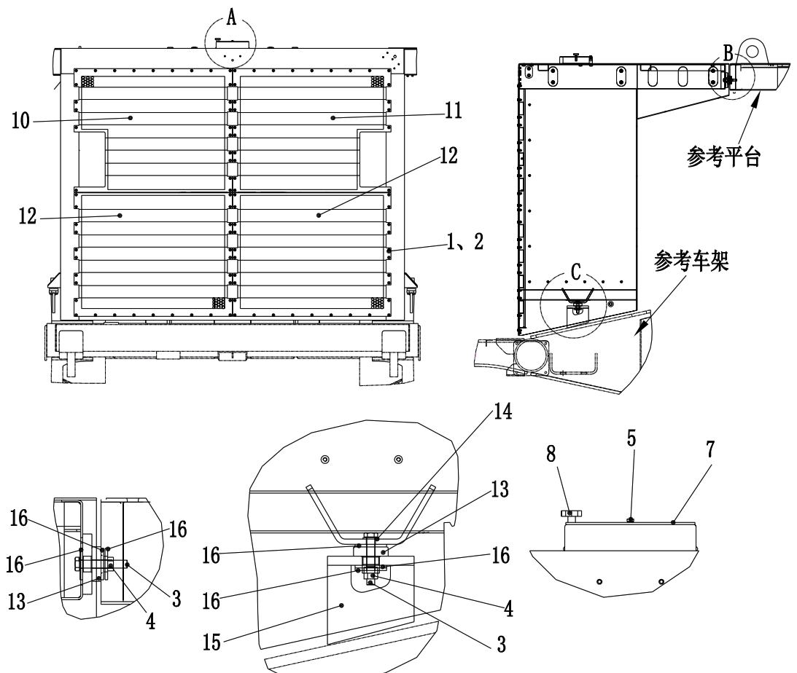

散热器护罩安装. · RADIATOR HOOD MOUNTING
Узел защитного кожуха
Описание и расположение
Защитный кожух радиатора в сборе покрывает зону от передней части платформы до передней части радиатора, защищая двигатель, радиатор и соответствующие компоненты.
Управление
Узел кожуха имеет две функции:
1. Защищать узел двигателя и радиатора от повреждений, вызванных падением посторонних предметов и окружающих посторонних предметов.
2. Зафиксируйте ограждение.
Ремонт и регулировка
Определите, надежно ли закреплены все монтажные кронштейны и болты, убедитесь в отсутствии повреждений и нахождении в хорошем рабочем состоянии сборочной единицы.
Снятие
Снять узел кожуха следующим образом:
1. Отсоедините соответствующие кабели.
2. Подсоедините подходящее подъемное приспособление (канат, подъемную проушину и т.д.) к защитному кожуху.
3. Снимите болты и шайбы, используемые для крепления ограждения к защитному кожуху.
4. Снимите ограждение, установленное на защитном кожухе.
5. Снимите болты и шайбы, используемые для крепления защитного кожуха к раме.
6. Снять болты и шайбы, которые закрепляют кожух на платформе.
7. Поднимите защитный кожух в сборе и разместите его на подходящем участке.
Ремонт
Ремонт узла кожуха включает следующие этапы:
1. Отремонтировать или заменить поврежденные металлические детали.
2. Проверьте состояние резинового буфера (13). Отремонтируйте или замените по мере необходимости.
Установка
Установить узел кожуха следующим образом:
1. Поднимите защитный кожух в сборе с участка и разместите его на платформе, совместите с монтажными отверстиями в раме.
2. Закрепите защитный кожух к платформе болтами и шайбами. Будьте особенно осторожны, избегайте перетягивания, повреждения резинового буфера.
3. Закрепите защитный кожух к раме болтами и шайбами. Будьте особенно осторожны, избегайте перетягивания, повреждения резинового буфера.
4. Закрепите ограждение к защитному кожуху болтами и шайбами.
5. Снять канат крана с кожуха.
6. Снова подсоединить снятые провода.
Конструктивные детали - узел защитного кожуха
020-0030
Конструкционные детали - топливный бак
020-0040
2
5
Конструктивные детали - узел защитного кожуха
020-0030
1
Конструкционные детали - топливный бак
020-0040
3
Дополнения - Масса компонентов
200-0090
Дополнения - Масса компонентов
200-0090
2
3
Дополнения - Масса компонентов
200-0090
См. платформу
См. платформу
Спецификация1.Плоская шайба7.Круглая крышка13.Резиновая подушка2.Болт с шестигранной головкой8Ручка14Плоская шайба3.Болт с шестигранной головкой9Узел защитного кожуха15Кронштейн защитного кожуха4.Самоконтрящаяся гайка10.Левое ограждение16Большая шайба5Болт11Правое ограждение6Болт12Левое ограждениеРис. 1. Узел защитного кожуха
Спецификация 1.Болт с шестигранной головкой5.Резиновая подушка9.Плоская шайба2.Болт с шестигранной головкой6.Узел защитного кожуха10.Кронштейн защитного кожуха3.Плоская прокладка7.Защитная решетка11.Большая шайба4.Самоконтрящаяся гайка8.Защитная решетка12
Рис.1. Узел защитного кожуха
Иллюстрации
